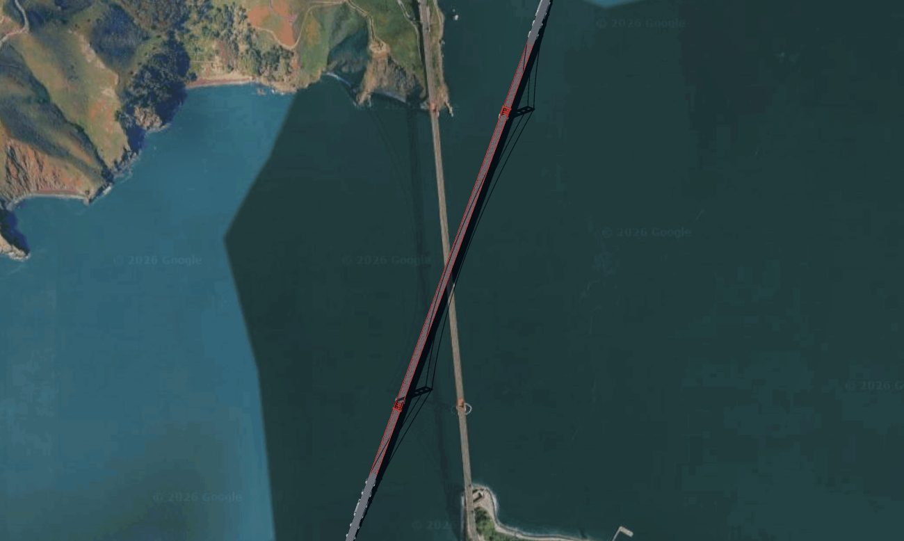
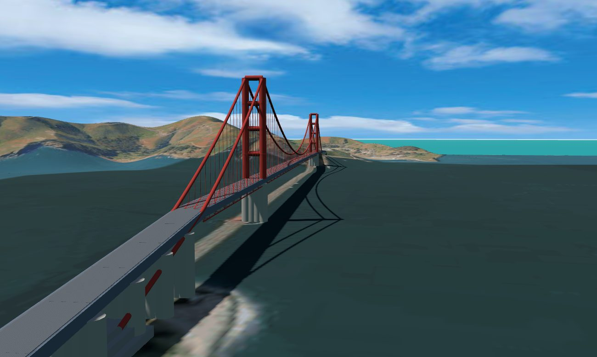
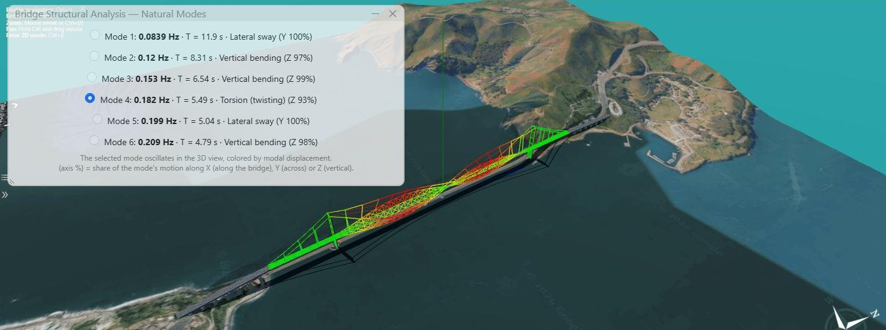
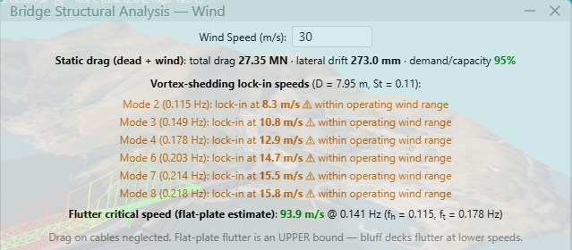

Building bridges with AI
Collaborate with the AI Assistant to design a bridge and test it with finite-element analysis
Bridges are good for learning engineering because you can see how they carry load. The deck hangs from the cables, the cables bear down on the towers and pull on the anchorages, and the towers and anchorages sit on rock. A famous bridge is also shaped by its site. The Golden Gate Bridge had to cross a strait more than 100 m deep, in fog and strong wind, with 1930s steel.
Bridges in Aladdin are parametric structures (girder, truss, arch, cable‑stayed or suspension) that a structural engine can load, shake and push to failure. This article walks through designing one with the AI Assistant, using the Golden Gate Bridge as the example. The same approach works for other bridges.
The design happens in a chat, one stage per turn: site, structural form, main dimensions, alignment and details. The assistant explains each decision and waits for you before going on. When the bridge is finished, you can ask the same assistant to run finite‑element analyses on it.
The session starts with one request: “Let’s build the Golden Gate Bridge step by step, from scratch, one stage per turn.” The assistant works out the bridge from what it knows about the real one and what it can see in the scene. This is the result after five turns:
The next five sections follow the session turn by turn. In short, it went like this (the assistant’s replies are shortened; the full text is in the file):
- YouLet’s build the Golden Gate Bridge step by step, from scratch, one stage per turn.
- AssistantStage 1 — the site. The scene is at the Golden Gate strait, 37.82° N, 122.48° W, with the satellite map on and the real ground relief under it, 268 m from lowest to highest across a 4.8 km square. Nothing is built yet. Go on to the structural form?
- YouGood. Next stage.
- AssistantStage 2 — the form. A two‑tower suspension bridge with vertical hangers, earth anchorages and a deep stiffening truss. The span decides it: no arch or cantilever of the 1930s came near 1,280 m. The deep channel rules out piers in the middle, and the rock on both shores can hold the cables.
- YouNext.
- AssistantStage 3 — the dimensions. The bridge is up: a 1,280 m main span, a 27.4 m deck 67 m above the water, towers 227 m above the water. My first try gave a 1,825 m main span, so I resized the deck until the main span measured 1,280.
- YouNext.
- AssistantStage 4 — alignment. From the top view, the real bridge runs about 6° west of north, and mine ran 20° east of north. I rotated the deck onto the real crossing and checked it again.
- YouNext.
- AssistantStage 5 — details. Bigger tower piers, thicker main cables and hangers, approach viaducts to 2,736 m end to end, International Orange. Here is what this model still can’t show, and here are the analyses you can run on it.
Stage 1: The site
The assistant sets the scene’s location to the strait, turns on the satellite map and fetches the real ground relief for a 4.8 km square, which takes in the Marin Headlands to the north and the Presidio bluffs to the south. The bridge is about 2.7 km long, so that leaves shore at both ends for the approaches. Nothing is built in this stage, but the ground decides a lot of what follows: how tall the towers are, where the approaches land and which way the bridge points.

Stage 2: The form
The second turn adds no geometry. The assistant explains why the Golden Gate is a suspension bridge:
- The span. The main span is 1,280 m. No arch or cantilever of the time came close: the record cantilever, the Quebec Bridge, spans 549 m.
- The water. The channel is deep and the tides run fast, so there can be no support in the middle. The two towers stand near the shores.
- The ground. Hard rock on both shores can hold the cable ends and carry the towers, which bring almost all of the bridge’s weight down into the ground.
- The wind. A long, light deck in a windy strait twists, so it needs a deep stiffening truss under the roadway.
The outcome is a suspension bridge with vertical hangers, earth anchorages and a stiffening truss. This is a good stage to ask questions. Ask “why not an arch?” and the assistant explains thrust and abutments before anything is built.
Stage 3: The dimensions
Now the bridge goes up, built mostly from the real bridge’s published figures:
| Dimension | Real bridge | AI’s model |
|---|---|---|
| Main span | 1,280 m | 1,280 m |
| Side spans | 343 m each | 320 m each |
| Overall length | 2,737 m | 2,736 m (after stage 5) |
| Deck width | 27.4 m | 27.4 m |
| Deck above the water | 67 m | 67 m |
| Towers above the water | 227 m | 227 m |
| Stiffening truss depth | 7.6 m | 7.6 m |
The first attempt got the span wrong. The assistant set the suspended structure to 2,737 m, the bridge’s full length, and Aladdin reported a main span of 1,825 m, 43% too long. In Aladdin the suspended structure covers only the main span and the two side spans, and the main span is two‑thirds of it. The assistant worked backwards to a 1,920 m structure, which gives a 1,280 m main span, and added short approach viaducts at each end. It lengthened them in stage 5 to bring the total to 2,736 m.
The assistant caught the error because it read the model back after building it and compared the main span with the published figure.
Stage 4: Alignment
The bridge from stage 3 had the right span and the wrong heading: it crossed the strait about 26° off. On a suspended structure nearly 2 km long, that puts the ends hundreds of metres away from the real ones. So the assistant took a top‑down view, found the real bridge in the satellite photo and measured its direction from the picture: about 6° west of north. Then it rotated its own deck to match and looked again.


The alignment is close but not exact. The assistant reported that its deck lay on top of the real one, but in the top view it runs alongside, a few tens of metres to the east. One more turn (“Move it onto the real bridge”) would fix it. It is worth checking the scene yourself rather than relying on the assistant’s description.
Stage 5: Details
The tower piers went from 9 m to 15 m in diameter. (The assistant asked for 18 m and its reply says 18, but Aladdin caps piers at 15 m.) The main cables and hangers were thickened, and the approach viaducts were lengthened to bring the overall length within a metre of the real 2,737 m. The towers, cables and truss are International Orange, the color the real bridge was painted partly so it would show up in fog. Finally the assistant set the camera on the finished bridge.

Without being asked, it also listed what the model leaves out. The real towers step inward in Art Deco stages; these are plain two‑legged frames. The stiffening truss has the right depth, but its triangular bracing is not drawn. The side spans are 320 m instead of 343 m, and the concrete fender around the south tower is missing.
Analyze the bridge
Aladdin’s bridges are structural models: the deck, cables, hangers and towers are members with real cross‑sections and material properties. That means you can analyze the finished bridge by asking in the same chat:
Six things to ask for
Each one is answered by Aladdin’s finite‑element model of the bridge.
-
Static
How much does the deck sag under traffic?
Loads the deck with its own weight and traffic, and reports how far it deflects and how hard each member is working compared with what it can carry.
-
Natural modesShown below
What are its natural frequencies?
Finds the shapes the bridge likes to vibrate in — vertical bending, swaying, twisting — and how fast.
-
WindShown below
What does a strong wind do to it?
Measures how far the deck is pushed sideways, and estimates flutter: the wind speed at which a long, light deck starts to twist on its own. For a span this long, wind is the governing danger.
-
Seismic
Could it survive a big earthquake?
Gives a quick verdict from a design response spectrum, or runs a recorded earthquake through the structure step by step while you watch the bridge shake.
-
Pushover collapse
How much load would it take to break it?
Keeps increasing the load until members yield and the structure collapses, which tells you its real safety margin.
-
Can you make it cheaper without making it unsafe?
Evolves the sizes of the deck, piers and towers to cut the cost of steel, cable and concrete while the strength, seismic and deflection checks still pass. It starts from your design, so its answer is never worse.
Two analyses of this bridge
We asked the assistant to run the natural‑modes and wind analyses on the bridge from this session. First, the natural modes:

The bridge’s slowest motion is sideways: the whole deck swings across the strait and back once every 12 seconds. Two vertical bending modes come next, and the lowest twisting mode is fourth, at 0.178 Hz. The twisting mode matters for wind. In a strong crosswind a long deck can start twisting on its own, which is called flutter; twisting destroyed the Tacoma Narrows Bridge in 1940. Flutter is harder to start when the twisting frequency is well separated from the bending frequency. Here the twisting frequency is about 1.55 times the first bending frequency.
The wind analysis used Aladdin’s default design wind of 30 m/s (108 km/h). The deck moved 273 mm sideways, which is small for a 1,280 m span, and every member stayed within its capacity. Aladdin’s flat‑plate estimate puts the start of flutter at 94 m/s, a little over three times the design wind. That is an upper bound, because a real deck flutters at a lower speed than a flat plate. The flutter frequency, 0.141 Hz, lies between the first bending and twisting frequencies, as it should when the two motions couple, so the two analyses are consistent.

Method. Aladdin models the bridge as a 3D finite‑element frame. Every girder, tower, cable and hanger is a beam element that can stretch, bend and twist, and the cables are stiffened by their own tension. The modes come from this model. The wind analysis applies drag as a steady sideways load, predicts vortex shedding from the deck depth and estimates flutter with thin‑airfoil theory.
These results come from a simplified parametric model, not the real bridge, and they may change as Aladdin’s solver is improved.
Because the model is parametric, you can change one thing and rerun an analysis: make the truss shallower and see how much more the deck moves, or add a third tower and see what happens to the cable.
Tips for designing your own bridge with the AI Assistant
- Ask for one stage per turn. Say “step by step, from scratch, one stage per turn,” and the assistant stops after each stage and waits for you.
- Argue with a stage before moving on. “Why not cable‑stayed?” or “Make the towers shorter” are good replies when it asks whether to go on. Your numbers win over the assistant’s, within what Aladdin can build.
- Check the top view yourself. The satellite photo is the answer key for alignment. If the bridge is off, say which way.
Seven more bridges, built the same way
The assistant built seven more famous bridges with the same five stages: it found the real site and crossing on the map, chose the structural form, sized the bridge from real figures, aligned it to the real crossing and finished the details, checking the structure where it needed it. Each model opens with the conversation that built it.
- Sydney Harbour Bridge, Australia: a single 503 m steel through‑arch. The first check found the deck girders overstressed, so the assistant added girder lines.
- Millau Viaduct, France: a 2,460 m cable‑stayed viaduct on eight spans across the Tarn valley, with its real 3% grade. In stage 4 the assistant wrongly reported the deck as level, then corrected itself a turn later.
- Forth Bridge, Scotland: an 1890 cantilever truss, where the huge towers are the structure. Aladdin builds equal spans, so the model has six spans of about 347 m instead of the real bridge’s two 521 m main spans.
- Huajiang Grand Canyon Bridge, China: a suspension bridge with the world’s highest deck. It opened in 2025, too recently for the satellite photo, so the assistant aligned it from the surveyed line on OpenStreetMap.
- Europabrücke, Austria: a 777 m girder bridge on six spans, 190 m above the Sill valley. The model’s spans are equal; the real ones vary, and the longest is about 198 m.
- Südbrücke, Mainz, Germany: a K‑truss railway bridge on four spans over the Rhine. The model covers only the 424 m steel‑truss section of the roughly 1 km crossing.
- Brooklyn Bridge, New York, USA: an 1883 suspension bridge whose towers also carry diagonal stays. The model’s towers first stood about 9 m off the stone towers mapped on OpenStreetMap, so a later turn shifted the bridge sideways onto them. That turn also shortened the main span from 528.5 m to 488 m, close to the real 486 m.
Conclusion
Designing the Golden Gate with the AI Assistant took five turns, and each came with the reasoning behind it: why the bridge hangs from cables, where the towers stand and why it is orange. The session also shows the assistant’s mistakes. It caught the wrong span by reading the model back, but it misreported the alignment and the pier size, which is why it pays to check the model yourself. The same five stages produced the seven other bridges above.
The finished bridge is a structural model on its real site, so the same chat can analyze it. The modal analysis found the lowest twisting mode at 0.178 Hz, and the wind analysis put the start of flutter at 94 m/s on a flat‑plate estimate.
Related reading: Five ways to cross a river · The bridge that bends · Designing your dream home with AI
← Back to Aladdin